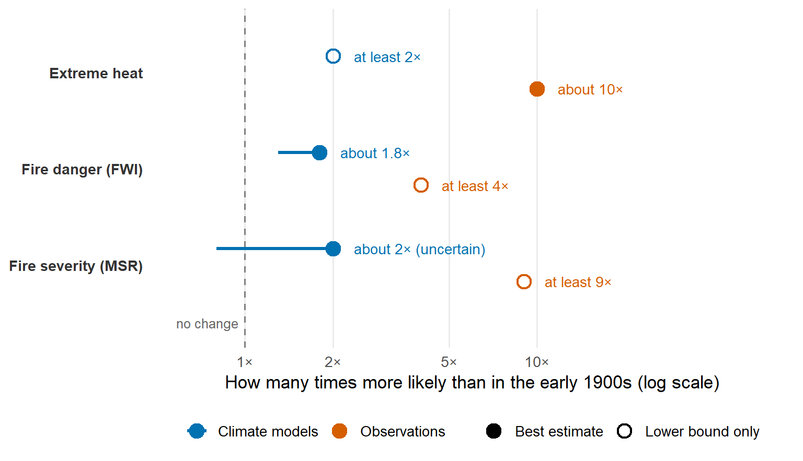

TipSummary
A 2021 study estimates that climate change has made the extreme fire weather behind Australia’s 2019/20 “Black Summer” at least 30% more likely. Observations suggest the true increase is considerably larger. The change is mainly linked to rising temperature extremes. Drought, by contrast, showed no detectable climate trend.
Australia’s 2019/20 “Black Summer” bushfires burned about 19 million hectares and killed at least 34 people directly. Smoke pushed air quality to hazardous levels in cities such as Sydney and Canberra (van Oldenborgh et al. 2021).
A disaster on this scale raises an obvious question: was it bad luck, or have the conditions behind such fires become more common? The answer shapes how many fire seasons like this one communities should expect, and how much to invest in preparing for them.
No single season can prove a trend, so scientists use event attribution. They compare how likely an event is in today’s climate with how likely it was in an earlier one, and the ratio of the two chances shows how much the odds have shifted.
This post looks at one such study by van Oldenborgh et al. (2021). It covers only the weather side of fire risk in southeastern Australia, not ignition, vegetation or how people responded. I use it to ask three questions:
- Has extreme heat become more likely since the early 1900s?
- Did climate change contribute to the record drought of 2019?
- Overall, how much more likely is the dangerous fire weather seen in 2019/20?
Where the evidence comes from
The study rests on three kinds of evidence. It helps to know what each one is before we look at the results.
- Observations. The main record is ERA5, a reanalysis produced by the European Centre for Medium-Range Weather Forecasts. It mixes real weather measurements with a weather model to piece together what the atmosphere was doing, going back to 1979. For temperature, the authors also used a longer record that reaches back to 1910.
- Climate models. The authors drew on eleven large ensembles. An ensemble is a batch of many simulations run from the same climate model. Not every ensemble suited every question. Only five had the daily data needed to measure fire danger, and one of those was dropped because it couldn’t reproduce heat extremes well, leaving four.
- Fire indices. To measure fire danger, the study uses the Fire Weather Index (FWI), which combines temperature, humidity, wind and recent rainfall. A second measure, the Monthly Severity Rating (MSR), reflects how hard a fire would be to put out. The authors checked the FWI against satellite records of burned area and found the match was strongest from November to February.
For each measure, the authors fitted a statistical model of extreme values. They then asked how likely an event as severe as 2019/20 is in today’s climate, compared with the early 1900s (the paper’s model comparisons start around 1920). That comparison is a probability ratio (PR). A PR of 2 means the event is twice as likely.
What the study found
Question 1: Extreme heat gives the clearest signal. In the observations, a heatwave as rare as the one in December 2019 would have peaked 1 to 2°C lower in the early 1900s, and it would have been roughly ten times less likely. The climate models are more cautious. They say such a heatwave is “at least twice as likely” now, and the authors treat that as a minimum rather than a best guess.
Question 2: Drought tells a different story. 2019 was Australia’s driest year on record, yet neither the observations nor the models picked up a clear climate trend in drought. Instead, two natural climate patterns, the Indian Ocean Dipole and the Southern Annular Mode, explain about a third each of the rainfall shortfall from July to December, so roughly two-thirds together. The authors note that both were predicted well, which gave early warning of the high fire risk in late 2019.
Question 3: Fire danger itself has become more likely. Heat and drought both feed into the fire indices, so the indices give the most direct answer to our third question. The 2019/20 season recorded the highest FWI values in the ERA5 record, which starts in 1979. According to the study, the models say this kind of fire weather is now at least 30% more likely (about 80% as a best estimate), while the observations suggest at least four times as likely. A related measure of how hard fires are to bring under control shows the same pattern: about twice as likely in the models, but at least nine times in the observations. Figure 1 compares the two for each measure.
Read the plot from left to right: the further right a point sits, the larger the increase in the chance of an event as extreme as 2019/20. The horizontal axis is logarithmic, so each equal step to the right means multiplying the odds rather than adding to them. Filled circles are best estimates, and open circles mean the study could only give a lower bound, so the true value is likely higher. For the two fire indices the horizontal line runs down to the lower end of the model range, and for the severity index it crosses the dashed “no change” line. The observation values for fire danger and severity come from ERA5, and the heat values come from the longer temperature record. Uncertainty ranges are not shown for the heat estimates. Drought is not in the plot because the study found no climate trend to show.
Two features stand out. First, observations sit well to the right of the models for every measure. Second, the models’ range for fire severity includes no change at all, so that result is uncertain.
The fire-danger result can also be put in terms of how often a season this severe should happen. The observation-based estimate suggests it would now occur about once every 31 years, compared with once in more than 800 years in the climate of 1900. That figure is very uncertain, anywhere from once every 4 years to once every 500 years. The authors also warn it may be overstated, because the short ERA5 record contains a drying trend.
Looking ahead, the models suggest that at 2°C of global warming a season this severe would be about eight times as likely as in 1900, and at least four times as likely by the lower bound. This rests on only two models.
Table 1 pulls these results together for each measure.
| Measure | What it captures | What the study found | How far to trust it |
|---|---|---|---|
| Extreme heat | Hottest 7-day stretch of the year | A week as hot as December 2019 is at least 2× as likely as in the early 1900s | Strong evidence of an increase; models probably understate its size |
| Drought | Low rainfall, over the year and in the driest month of the fire season | No detectable climate trend; natural climate patterns account for about two-thirds of the 2019 shortfall | Finding of no trend does not rule out a small one |
| Fire danger (FWI) | Weather conditions that make fires start and spread | At least 30% more likely in models; at least 4× in observations | Direction is clear; observation-based size may be too high |
| Fire severity (MSR) | How hard a fire is to bring under control | At least 9× in observations; about 2× in models, but the range includes no change | Large gap between observations and models |
Reading the evidence with care
Several limits affect how far these numbers can be pushed. The climate models tend to show too much natural variability and too little long-term warming compared with observations. This is why the model results are floors rather than best estimates. The ERA5 record is short, so its fire-danger trend may partly reflect natural variation. The 2°C projection rests on only two models. The study also looks at weather alone, so it says nothing about how ignitions, fuel or fire management changed.
The three questions from the start have different answers. Extreme heat has become more likely, by at least a factor of two and probably much more. Drought in 2019 is best explained by natural climate patterns rather than a detectable climate trend. For overall fire weather, the models show an increase of at least 30%, and observations suggest the real figure is several times higher, although that estimate may itself be overstated.
According to the study, climate change has raised the chance of the dangerous fire weather seen in 2019/20, mainly through hotter extremes. This is a statement about odds, not about one season. Natural climate swings also made the 2019 season much more severe.
Weather is also only part of the story. The paper stresses that preparedness, warning systems, infrastructure and land use all shaped the impacts. It notes, for example, that some planned controlled burns in 2019 could not be completed because conditions became too dry to burn safely. The authors call for urgent adaptation to changing risks, especially for the most vulnerable (van Oldenborgh et al. 2021). For readers, the practical message is that a season like Black Summer looks less like a remote possibility and more like a scenario worth planning for.
References
van Oldenborgh, Geert Jan, Folmer Krikken, Sophie Lewis, et al. 2021. “Attribution of the Australian Bushfire Risk to Anthropogenic Climate Change.” Natural Hazards and Earth System Sciences 21 (3): 941–60. https://doi.org/10.5194/nhess-21-941-2021.